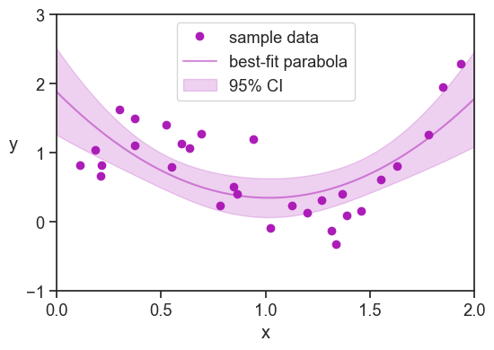

“Past performance is not indicative of future results.”
Every investment firm has this disclaimer. Although it is generally very good practice not to heavily rely on any particularly successful hedgefund to take care of my business, I still find this sentence infuriating. If past performance is not indicative, then stop advertising last year’s returns! What’s more, how should I decide to whom entrust my investments (if at all) if a firm’s track record is “not indicative”?!
I will stipulate that the one question important to us is:
How can I study a system’s past behavior, so I can say something meaningful about its future?
There are many other interesting questions that I could have asked, but if you are with me that right now we will focus on the question above only, then there are many things that we should and should not do.
Data splitting, the name of this chapter, is a technical term, and we might think that it primarily deals with rules of thumb like splitting our dataset 70-30% between training and test sets. We can learn all that in other tutorials, not here. I will argue that data-splitting best practices are there to ensure the integrity of the question above.
50.2 NOT splitting the data
Let’s say that I conducted an experiment and collected 30 data points.
import libraries
import numpy as npimport matplotlib.pyplot as pltimport seaborn as snssns.set_theme(style="ticks", font_scale=1.2)from mpl_toolkits.mplot3d import Axes3D # noqa: F401from numpy.polynomial import Chebyshevimport statsmodels.api as smfrom sklearn.metrics import r2_score, mean_squared_errorblue ="xkcd:cerulean"gold ="xkcd:gold"pink ="xkcd:hot pink"green ="xkcd:forest"purple ="xkcd:barney"
Best fit parabola: y = 1.5x^2 -3.0x + 1.9
Adjusted R^2: 0.36
RMSE: 0.51
p-value for positive x^2 coefficient: 0.0001

Here are a few things I could say about my findings:
The model explains 36% of the variance in the sample data.
The model’s performance, as measured by the root mean squared error against the sample data, is 0.51.
The sample data is best explained by a convex parabola (positive coefficient for the x^2 term), and the p-value for this coefficient is 0.0001 (against the null hypothesis of a zero coefficient).
All of this is fine, and I made sure to say “sample data” in all of the statements above. If all I’m interested is in describing the past, then all is good.
I might be tempted to say something more general, like:
The model captures 36% of the variance in this system.
We can predict the system’s behavior with an expected RMSE of 0.51.
We demonstrate that variabley has a convex relationship with variablex.
This is where we are in trouble. We have no reason to believe that the model’s performance on the sample data will be similar to its performance on future data from the same system. More generally, we have no reason to believe that the relationship between y and x in the sample data will be similar to the relationship between y and x in future data from the same system. It could be so, we just don’t know it.
And why not? Because we optimized the model to fit the sample data, and we never tested the model on data it hasn’t seen before. This simple fact prevents us from generalizing our findings to the system as a whole, and to future data from the system.
The conclusion here is that if we want to say something meaningful about the system in general, or about its future, then we need to put aside some of the data.
50.3 performance on unseen data
In general terms, we expect that the a model’s performance on unseen data will be worse than its performance on the data it was trained on. The reason should be obvious to us from now on: we optimized the model to fit the training data. Sure, it could be that by chance the performance on the unseen data is better than on the training data, but we have no reason to expect it.
As an illustration, let’s say that we split our sample data of 30 points into a training set of 20 and a test set of 10. We fit the same degree 2 polynomial to the training data, and evaluate its performance on the test data.
As expected, the model’s performance on the test data, as measured by the RMSE and R-squared, is worse than its performance on the training data: the RMSE went up, and the R-squared went down. By chance, we had the “luck” of getting a negative R-squared on the test data! How is that possible?! In very few words, this means that the model is worse that useless. The model does so badly on the test data, that we would have been better off just predicting the mean of the test data for all test points, instead of using the model’s predictions. More on this point on the chapter on R-squared.